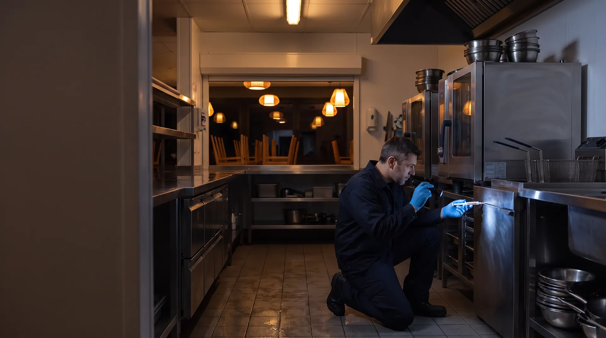

Разовая обработка
от 3 500 ₽ за выезд
Обследование, обработка очага гелем днём или ночью, акт и СГР.

Уничтожаем тараканов, мух, дрозофил и муравьёв на кухне, в баре, на складе продуктов и в зале. Днём работаем гелями — кухня не останавливается. Очаг обрабатываем ночью, когда в заведении нет гостей и персонала. После визита оставляем акт и запись в журнале: их можно показать Роспотребнадзору и аудитору сети.
Дезинсекция кафе, ресторана или столовой — уничтожение насекомых и защита от их возвращения: тараканов, мух, дрозофил, муравьёв, пищевой моли. В общепите её проводит организация с лицензией, а результат записывают в акт и журнал.
Обновлено 11.11.2026
Выберите зону на схеме или в списке — покажем, какие насекомые там заводятся и что мы там ставим.
Так точки выглядят в ваших документах — образец схемы точек пест-контроля (PDF).
Таракан в зале или на раздаче обычно означает, что очаг уже есть на кухне. Чем раньше начнём, тем меньше точек придётся обрабатывать.
В общепите почти всегда встречается рыжий таракан. Он любит тепло, влагу и узкие щели рядом с едой, поэтому прячется не там, где его видят, а в оборудовании и полостях.
В столовых и пищеблоках обработку назначаем на санитарный день, в кофейнях и барах — до открытия.
Почему одной обработки против тараканов мало
Распылять средство в зале против летающих насекомых почти бесполезно: скоро вылетит новое поколение. Поэтому сначала ищем места выплода и закрываем их.
Выводятся у отходов. Проверяем вход и приёмку, мусорные баки, летнюю веранду. Ставим УФ-ловушки с клеевым экраном вне линии раздачи. Сетки, завесы и доводчики дверей записываем в рекомендации к акту.
Выводятся в переспевших фруктах, остатках сиропов и пива, в мусоре с органикой. Ищем источник в баре и овощном цехе, ставим приманочные ловушки и даём персоналу список, что убрать и как часто.
Мелкие серые мошки живут в налёте трапов, жироуловителей и дренажа холодильников. Средство для мест выплода работает только после механической чистки трапа. Кто чистит — персонал или техслужба, записываем в акт.
Сколько мух попалось на клеевые пластины, записываем в журнал при каждом визите. По этим цифрам видно, откуда идут насекомые.
Живут в тёплых полостях стен и идут к сладкому — в кондитерский цех, бар, на раздачу. Приманки раскладываем по муравьиным дорожкам. Распыление не помогает: колония делится и переселяется в новые места.
Заводятся в муке, крупах, специях, орехах и какао. Ставим феромонные ловушки, проверяем входящие партии и показываем, какую продукцию вывести. Пустые стеллажи обрабатываем только после выноса продуктов.
Все средства — с государственной регистрацией. Копии СГР и инструкции передаём для папки производственного контроля. Действующие вещества чередуем, чтобы у тараканов не появилось привыкание.
Когда можно вернуться к работе, зависит от средства. Называем время заранее, когда согласуем окно.
Общие причины — устойчивость к средствам и защита яиц — разобраны на странице «Дезинсекция для организаций». Здесь — причины, которые мы видим именно на кухнях.
| Причина | Что происходит | Что делаем |
|---|---|---|
| Осталось необработанное укрытие | Кофемашина, ледогенератор, моторный отсек холодильного стола, раздевалка персонала. Одного пропущенного места хватает, чтобы через месяц всё повторилось. | Проверяем все зоны по схеме, а не только место, где увидели таракана. |
| Гель смыли при уборке | Утренняя мойка щелей и плинтусов с моющим средством убирает приманку. | Отмечаем точки с гелем на схеме и даём персоналу памятку, что мыть можно, а что нельзя. |
| Тараканы приехали с поставкой | Коробки поставщиков и возвратная тара — частый путь на кухню и склад. | Даём правило для приёмки: распаковывать в зоне приёмки, коробки на кухне не хранить, тару сразу выносить. |
| Из яиц вышел молодняк | Самка рыжего таракана носит капсулу с яйцами — оотеку — почти до выхода молодняка, и средство через её оболочку почти не проходит. | Повторная проверка через 10–14 дней. Если живые остались — меняем средство на другую химическую группу (п. 99 СанПиН 3.3686-21). |
| Тараканы идут от соседей | В торговом центре или жилом доме — по стоякам, вентиляции и общим коммуникациям. | Ставим мониторы на границе с соседними помещениями и пишем в акте, откуда идут насекомые. С этим документом проще говорить с управляющей компанией. |
Каждый документ можно открыть: на его странице — что в нём должно быть, и образец в PDF.
После каждого визита
По договору
К проверке
Ещё в папке
Вопросы проверочного листа для общепита — приказ Роспотребнадзора № 580, приложение 2
| Вопрос | Чем ответить |
|---|---|
| № 11 — проводится ли производственный контроль на принципах ХАССП, включая периодичность и проведение дезинсекции и дератизации | Программа производственного контроля с разделом о дезинсекции, договор, график |
| № 58 — нет ли в помещениях насекомых и грызунов (п. 26 СанПиН 2.3/2.4.4282-26) | Журнал с результатами по точкам, акты, отметки о выполнении рекомендаций |
| № 108 — соблюдается ли запрет хранить и готовить продукцию во время дезинсекции и дератизации | Акты с датой и временем ночных обработок |
| № 109 — соблюдается ли запрет распыляемых и рассыпаемых токсичных средств при посетителях и персонале | Те же акты и перечень применённых средств |
Разбор проверочных листов →Все документы для Роспотребнадзора →Проверить папку до инспектора — санитарный аудит →
На эти документы опирается инспектор. Рядом — официальный текст и наш разбор простыми словами.
Точную цену называем после бесплатного обследования и закрепляем в договоре.
от 3 500 ₽ за выезд
Обследование, обработка очага гелем днём или ночью, акт и СГР.
от 3 500 ₽ в месяц
Визиты по графику, клеевые мониторы и УФ-ловушки на схеме, обработки по результатам, журнал и акты, выезд по вызову в течение 3 часов.
от 4 900 ₽ в месяц
Один договор на насекомых и грызунов, общий график и один комплект документов. Подробнее о комплексе
Расчёт после обследования
Один договор на все адреса, общий график и сводный отчёт по сети.
Ориентир цены дезинсекции по таблице ниже. Точную цену называем после бесплатного обследования.
Дезинсекция по площади заведения
| Площадь | Разовая работа | Договор, в месяц |
|---|---|---|
| до 100 м² | от 3 500 ₽ | от 3 500 ₽ |
| 100–200 м² | от 3 500 ₽ | от 3 500 ₽ |
| 200–300 м² | от 6 000 ₽ | от 4 500 ₽ |
| 300–500 м² | от 8 500 ₽ | от 7 000 ₽ |
| 500–1000 м² | от 10 500 ₽ | от 8 000 ₽ |
| больше 1000 м² | по расчёту | по расчёту |
Цены «от» — для заведения без активного очага. Площадь — вся площадь заведения: кухня, склад, бар, зал и подсобки. Точную цену называем после бесплатного обследования.
Работаем с общепитом любого формата и размера — от кофейни-островка в торговом центре до фабрики-кухни и сети ресторанов.
Инспектор смотрит не только насекомых и грызунов. Эти услуги закрывают остальные вопросы проверочного листа — у одного исполнителя и в одной папке документов.
Норма задаёт обследования: на объектах общественного питания — не реже 2 раз в месяц (пп. 98 и 101 СанПиН 3.3686-21). Обработку проводят, когда обследование нашло насекомых. По договору кратность визитов закрепляем в графике, а по сигналу приезжаем внепланово.
Одной обработки обычно мало: через 10–14 дней из яиц выходит молодняк, поэтому нужна повторная проверка, а при необходимости — повторная обработка. Если тараканов много или они приходят от соседей, нужен регулярный контроль по договору: по журналу видно, когда находки прекратились.
После гелей — сразу. После распыления — когда пройдут проветривание и влажная уборка по инструкции к средству. Время называем заранее, когда согласуем окно.
В первые дни средство выгоняет их из укрытий, поэтому они чаще попадаются на глаза. Если через 10–14 дней живые тараканы остаются, повторяем обработку средством из другой химической группы (п. 99 СанПиН 3.3686-21).
Применяем только средства с государственной регистрацией и по инструкции. Гель наносим точками в недоступных местах. Распыляемые средства — только когда в заведении нет людей, продукция при этом убрана.
Да. Срочные выезды — круглосуточно, ночью и в выходные — без наценки. До приезда уберите продукты и посуду по списку подготовки кухни. Утром кафе открывается в обычное время, если не понадобилось распыление. Если понадобилось — время называем заранее по инструкции к средству.
Да, это частые укрытия рыжих тараканов: там тепло и есть вода. Гель наносим в полости корпуса и моторные отсеки, мест контакта с продуктами и водой не касаемся. Если для доступа нужно снять панели, это делает ваша техслужба или сервисная компания оборудования.
Да — со столовыми предприятий и бизнес-центров, пищеблоками и фабриками-кухнями. Обработку назначаем на санитарный день или после последней смены, чтобы не останавливать линию раздачи. Документы оформляем на организацию, которая заключает договор: владельца столовой или оператора питания.
Да. Работаем в часы, которые разрешает управляющая компания центра, — обычно до открытия или после закрытия. Если тараканы приходят по общим коммуникациям, пишем об этом в акте: общие зоны обычно обслуживает управляющая компания, и одной обработки своего кафе тогда мало. Общие зоны центра можно передать нам по договору с управляющей компанией — пест-контроль бизнес-центров и ТЦ.
Дезинсекция — работа с насекомыми: обследование, обработка и контроль результата. Пест-контроль — система по договору против насекомых и грызунов: точки контроля, график визитов, журнал и документы для проверок. Подробно — на странице «Пест-контроль ресторанов и кафе».
Приедем в удобное окно — до открытия или после закрытия, найдём очаги и пришлём расчёт с проектом договора.